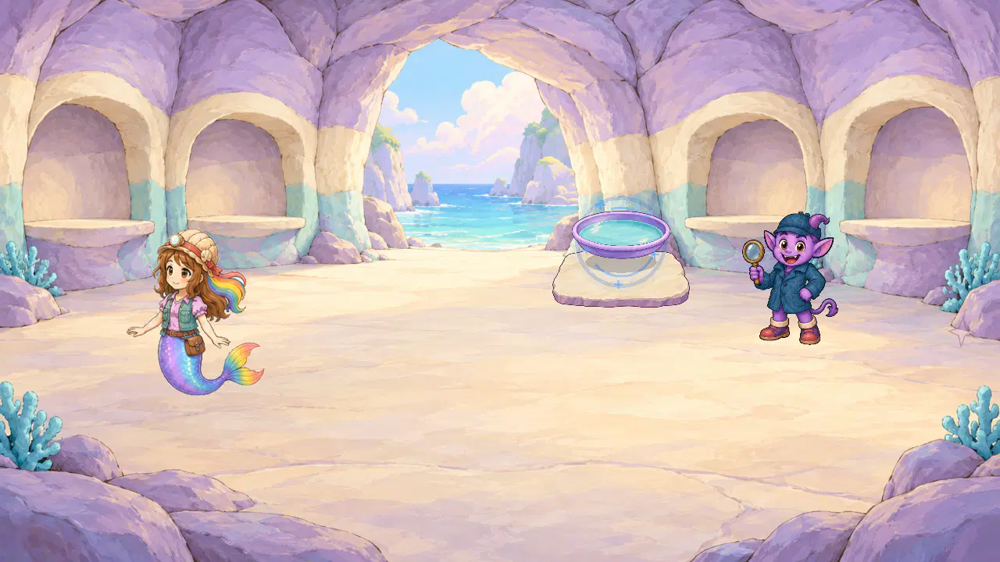
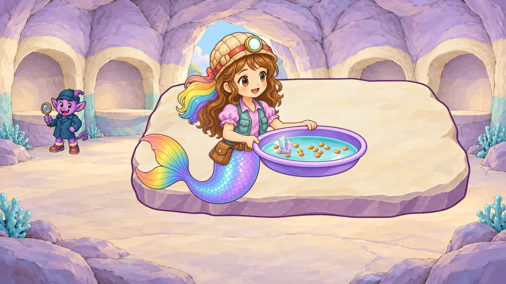
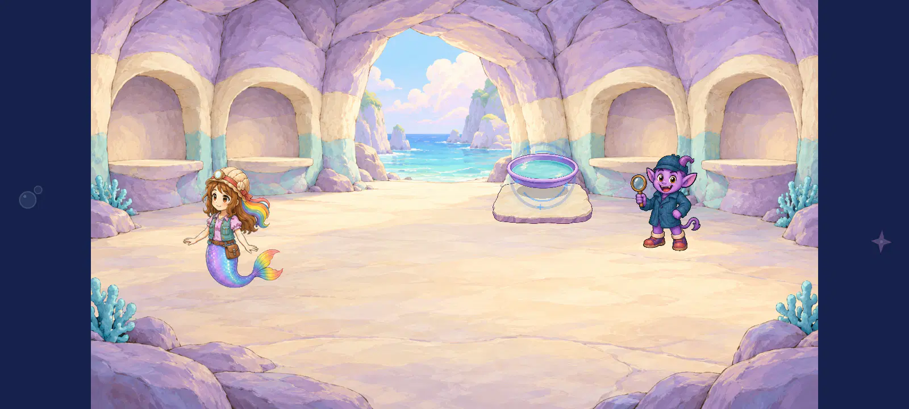
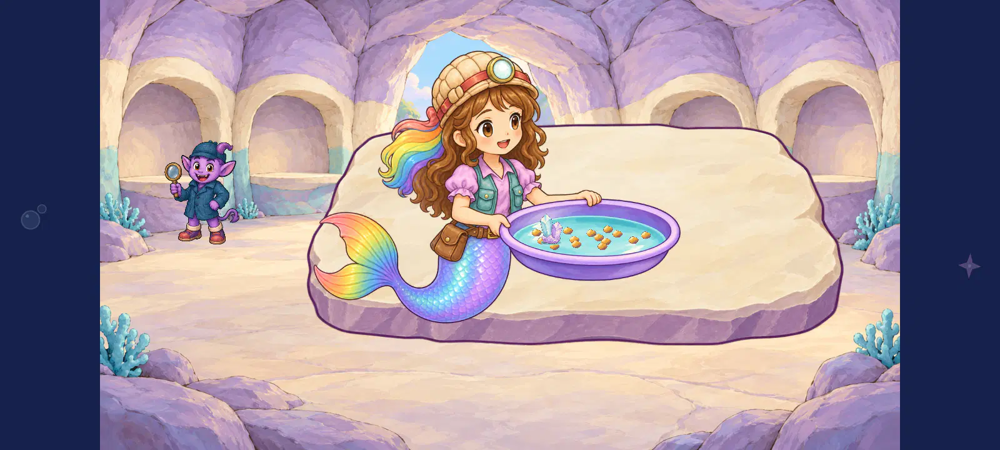

Geologist new gripping pose — all6 native views
Both raised arms grip the pan4.6. Static source quality4.6; tabletop support4.3 and real articulated rocking/travel/pickup/release/return remain open. The whole-card displacement in this disposable study is not accepted job action. Current illustrated library:292 direct teacher/geology/pan comparisons,16 ImageGen originals,30 neutral displays and11 technical derivatives.
Individual scores/hashes · Exact source/transforms · Machine receipt · Unchanged-pose reuse failure · Every source and rejected attempt
geologist_1280_pan_invitation_painted_staging

Invitation unchanged; the new gripping source is absent, so no new actor contact is scored. Existing static pan/slab contact4.5 provisional retains its earlier qualification.
invitation object contact 4.5/5; scene coherence 4.4/5
Phase-selected native static contact study; inherited partial one-finger panning input and325 unchanged production sources. All6 views directly inspected. No complete naturally timed ordinary training/story route, target device/child/owner or final report acceptance.geologist_1280_pan_opened_task_painted_staging
The new complete generated pose makes both grips and physical actor/pan scale readable4.6; head, face, fingers and full fin remain clear at this width. Grains stay inside authored aqua water4.6, but their tiny12px material is4.5 provisional. Tail sits across the slab front without an authored compression/support shadow, so tabletop support4.3 remains weak. This selected static state after inherited input does not prove rocking: the disposable fixture translates the whole connected card with pan_visual_x and supplies no articulated frames, approach, pickup, release or return. No full action pass.
actor identity finish 4.6/5; static hand rim contact 4.6/5; actor tabletop support 4.3/5; grain finish 4.5/5; grain basin containment 4.6/5; scene coherence 4.5/5
Phase-selected native static contact study; inherited partial one-finger panning input and325 unchanged production sources. All6 views directly inspected. No complete naturally timed ordinary training/story route, target device/child/owner or final report acceptance.geologist_1280_pan_partial_panning_reversals_painted_staging

The new complete generated pose makes both grips and physical actor/pan scale readable4.6; head, face, fingers and full fin remain clear at this width. Grains stay inside authored aqua water4.6, but their tiny12px material is4.5 provisional. Tail sits across the slab front without an authored compression/support shadow, so tabletop support4.3 remains weak. Recovered mineral stays inside water with a joined base/contact4.5 provisional. This selected static state after inherited input does not prove rocking: the disposable fixture translates the whole connected card with pan_visual_x and supplies no articulated frames, approach, pickup, release or return. No full action pass.
actor identity finish 4.6/5; static hand rim contact 4.6/5; actor tabletop support 4.3/5; grain finish 4.5/5; grain basin containment 4.6/5; mineral water contact 4.5/5; scene coherence 4.5/5
Phase-selected native static contact study; inherited partial one-finger panning input and325 unchanged production sources. All6 views directly inspected. No complete naturally timed ordinary training/story route, target device/child/owner or final report acceptance.geologist_1600_pan_invitation_painted_staging

Invitation unchanged; the new gripping source is absent, so no new actor contact is scored. Existing static pan/slab contact4.5 provisional retains its earlier qualification.
invitation object contact 4.5/5; scene coherence 4.4/5
Phase-selected native static contact study; inherited partial one-finger panning input and325 unchanged production sources. All6 views directly inspected. No complete naturally timed ordinary training/story route, target device/child/owner or final report acceptance.geologist_1600_pan_opened_task_painted_staging
The new complete generated pose makes both grips and physical actor/pan scale readable4.6; head, face, fingers and full fin remain clear at this width. Grains stay inside authored aqua water4.6, but their tiny12px material is4.5 provisional. Tail sits across the slab front without an authored compression/support shadow, so tabletop support4.3 remains weak. This selected static state after inherited input does not prove rocking: the disposable fixture translates the whole connected card with pan_visual_x and supplies no articulated frames, approach, pickup, release or return. No full action pass.
actor identity finish 4.6/5; static hand rim contact 4.6/5; actor tabletop support 4.3/5; grain finish 4.5/5; grain basin containment 4.6/5; scene coherence 4.5/5
Phase-selected native static contact study; inherited partial one-finger panning input and325 unchanged production sources. All6 views directly inspected. No complete naturally timed ordinary training/story route, target device/child/owner or final report acceptance.geologist_1600_pan_partial_panning_reversals_painted_staging

The new complete generated pose makes both grips and physical actor/pan scale readable4.6; head, face, fingers and full fin remain clear at this width. Grains stay inside authored aqua water4.6, but their tiny12px material is4.5 provisional. Tail sits across the slab front without an authored compression/support shadow, so tabletop support4.3 remains weak. Recovered mineral stays inside water with a joined base/contact4.5 provisional. This selected static state after inherited input does not prove rocking: the disposable fixture translates the whole connected card with pan_visual_x and supplies no articulated frames, approach, pickup, release or return. No full action pass.
actor identity finish 4.6/5; static hand rim contact 4.6/5; actor tabletop support 4.3/5; grain finish 4.5/5; grain basin containment 4.6/5; mineral water contact 4.5/5; scene coherence 4.5/5
Phase-selected native static contact study; inherited partial one-finger panning input and325 unchanged production sources. All6 views directly inspected. No complete naturally timed ordinary training/story route, target device/child/owner or final report acceptance.